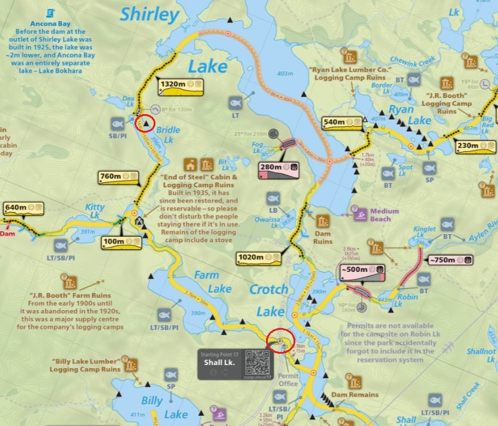
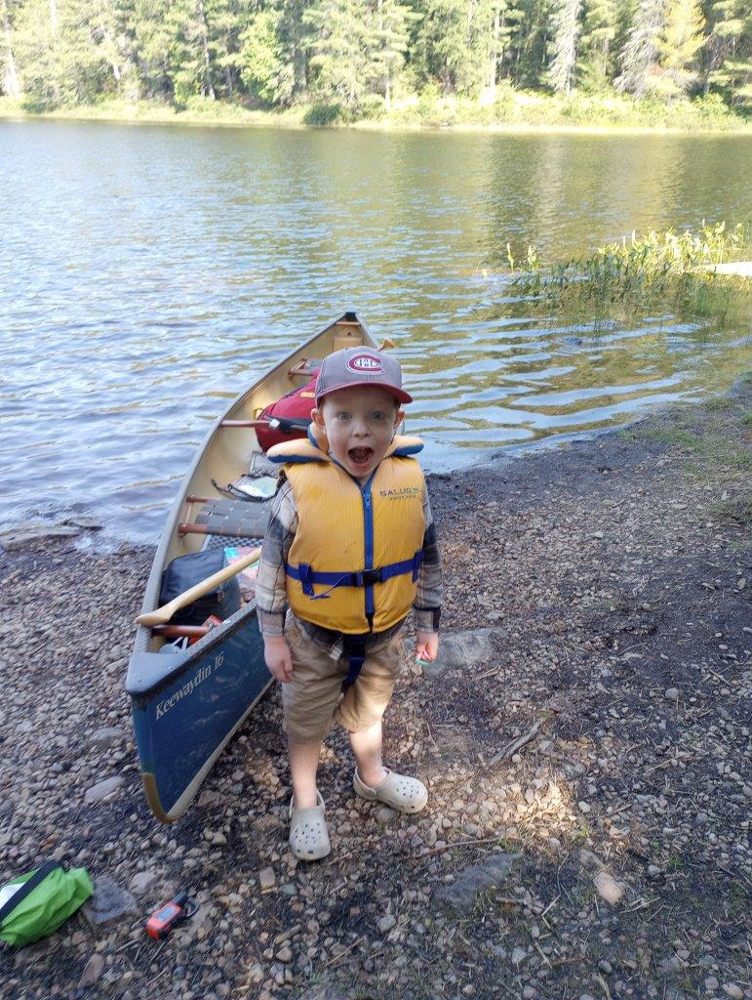
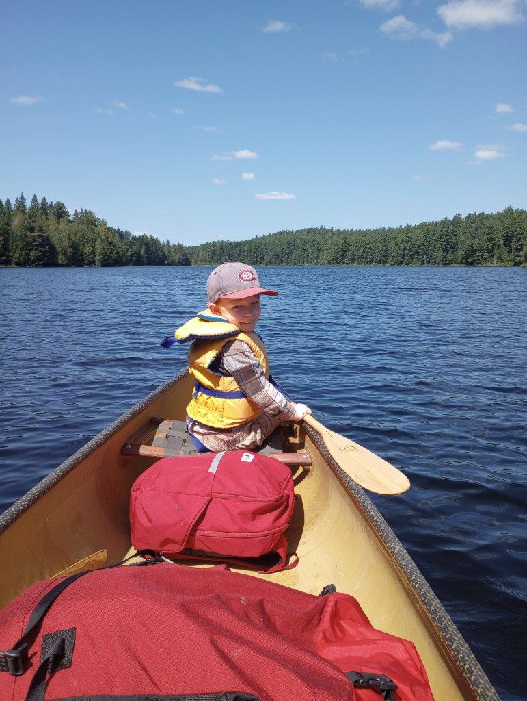
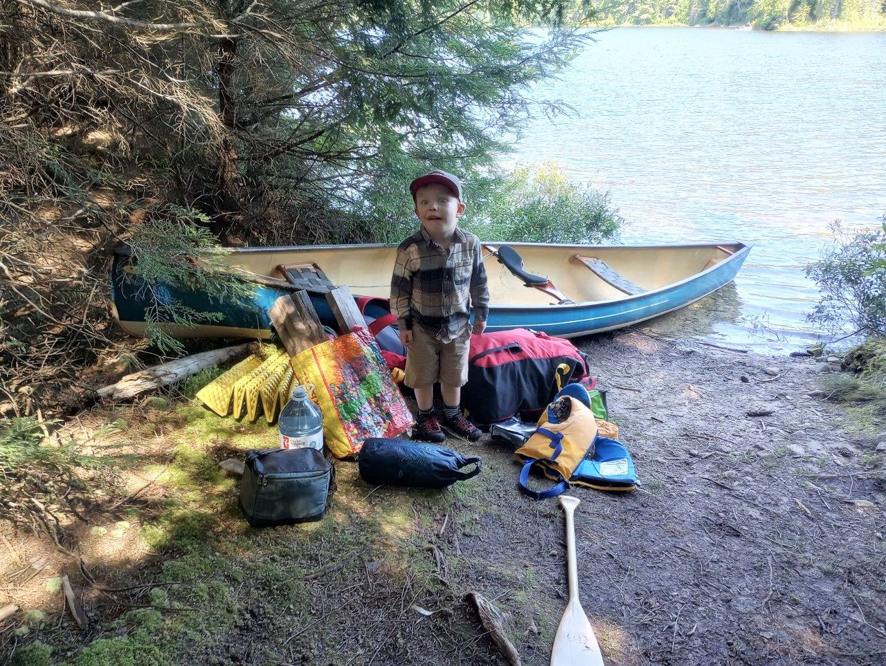
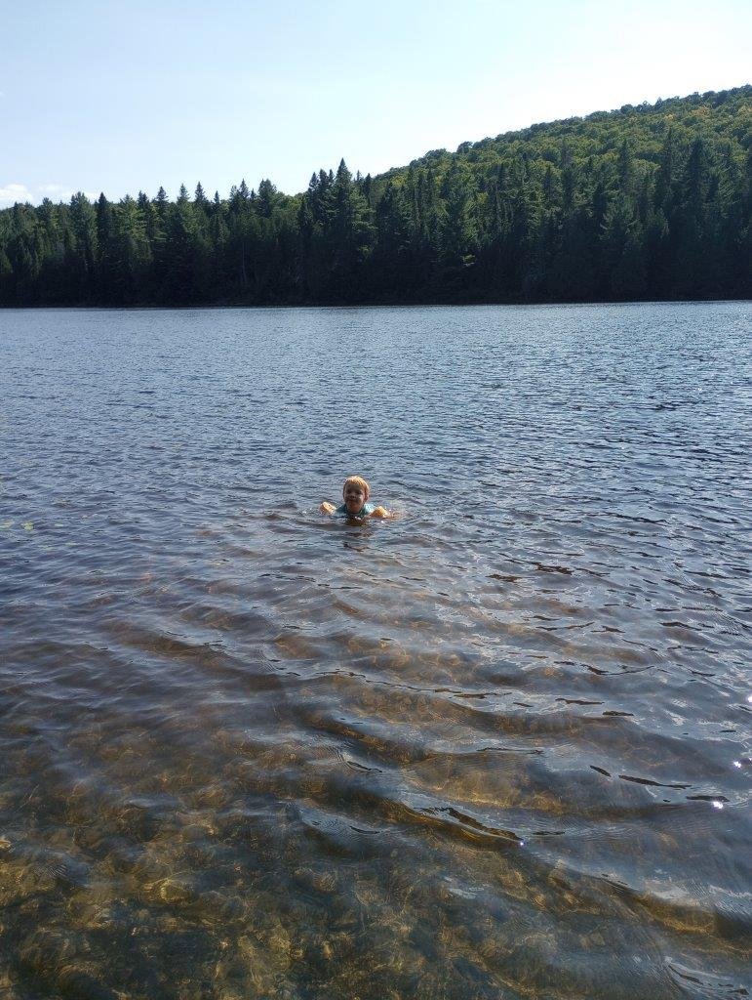
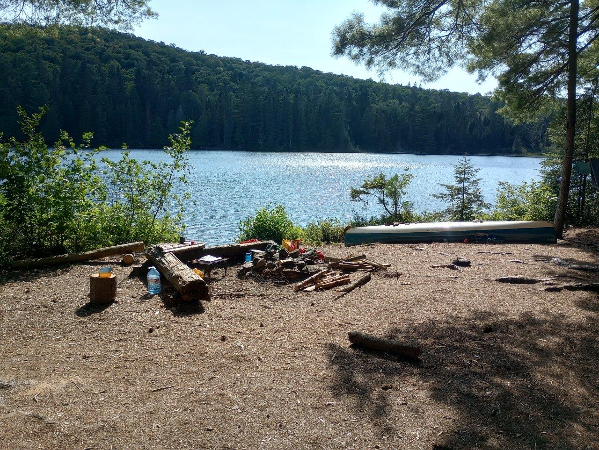
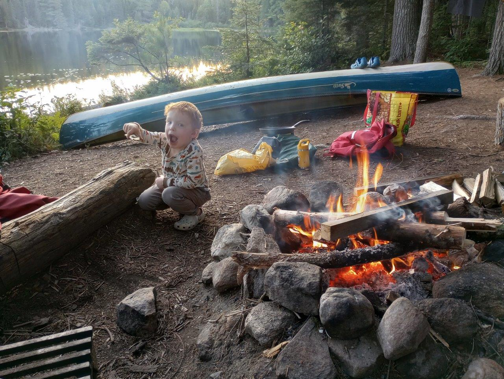
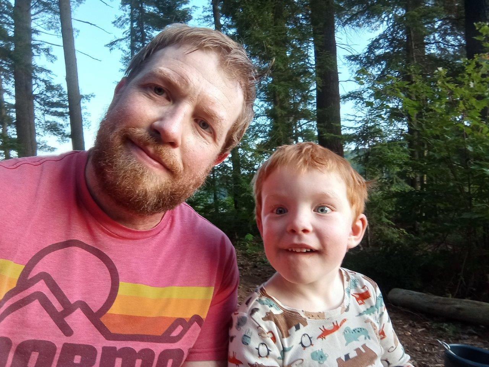

The 3rd annual Dad-Gordon trip. 1 night, campsite circled in red.










 |
2024 August 22-23 Bridle Lake trip from Access Point 17 (Shall Lake) The 3rd annual Dad-Gordon trip. 1 night, campsite circled in red. |
 |
As usual, Gordon is excited to get going. The challenge this year is a long portage (760m) but Gordon says he's up for it. |
 |
Paddling down Farm Lake from the launch, a bit of a headwind going on but a nice warm day. Gordon is doing his best paddling yet. The backpack Gordon is going to portage is right behind him, full of his clothes and other stuff. |
 |
We finished the portage, having do a half double-back to grab the firewood and large jug of water we brought in. Gordon did awesome, but he really didn't like the mucky section. Minimal complaints. |
|
The typical silly smile standing next to the portage sign. Bridle lake looks nice from here, and Gordon looks like a real backcountry camper (which he is). |
|
The first priority upon landing is to relax, get the hammocks out and enjoy some chips (and a cold beer or two while they're still cold). Nice view down the lake towards the protage we came in. |
 |
The day was hot enough to go for two swims, Gordon doesn't mind that his feet can't touch. He really liks to go swimming when we're backcountry, and the lake was quite refreshing despite it being late August. |
 |
View of our site on Bridle lake, nice firepit and seating area with easy water access and a few good tent pads. |
 |
Gordon showing off his toy boat he made out of a piece of wood he found. Had a nice campfire with minimal bugs. |
 |
Us. |
|
Had a nice pancake breakfast and paddled out around 8:30am with minimal wind. This is Gordon at the landing before we pack up the car. Single carried the portage on the way back, and we made sure to stop at the chip truck in Barry's Bay for a nice post-trip reward. Another great trip, as always. |